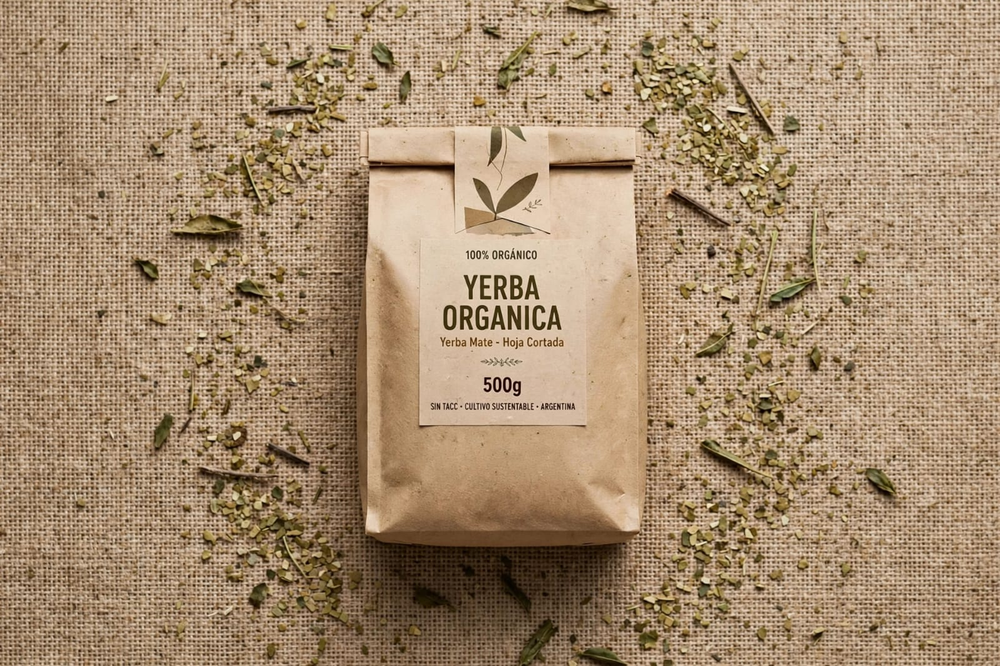
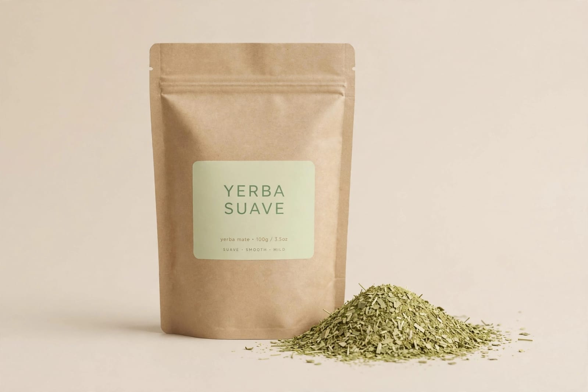
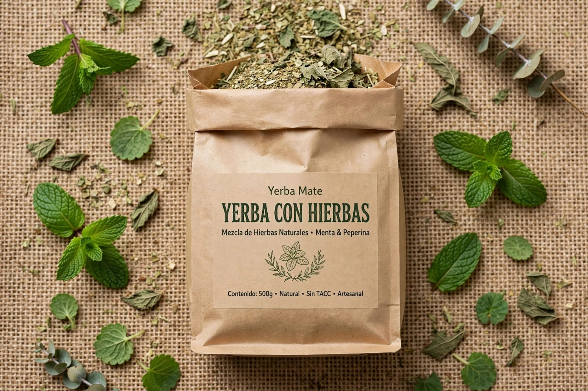
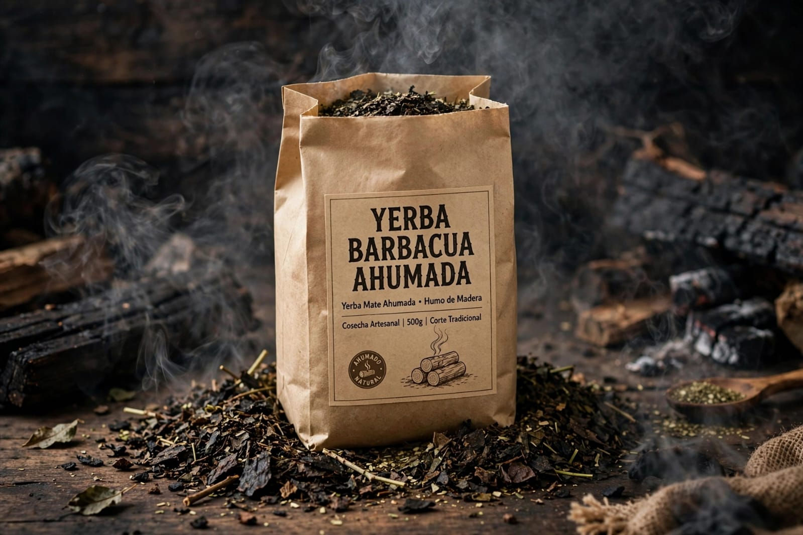

YERBA MATE ARGENTINA
Tradicion, sabor y naturaleza...
Desde las tierras de misiones, yerba mate organica y artesanal. Sabor autentico, cosechado con cuidado, para tus momentos diarios.

Descubri nuestra seleccion de yerbas artesanales, organicas y con hierbas..-

Yerba organica 500g
Suave . Aromatica . Organica
$2850
Yerba suave
Sabor tradicional
$3200
Yerba mate con hierbas 500g
Menta- Manzanilla- Digestiva
$3500
Yerba mate Barbacua 500g
Ahumada- Intensa
$3400